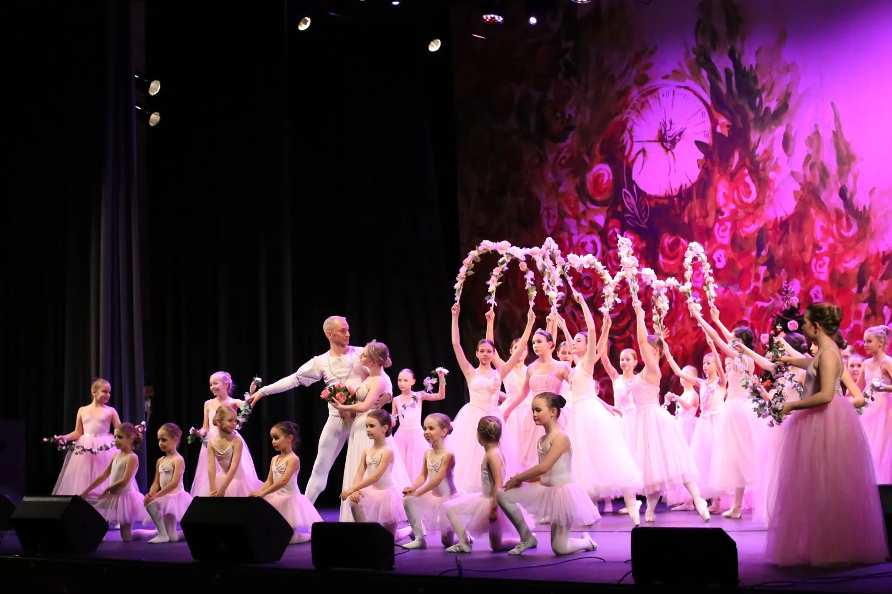
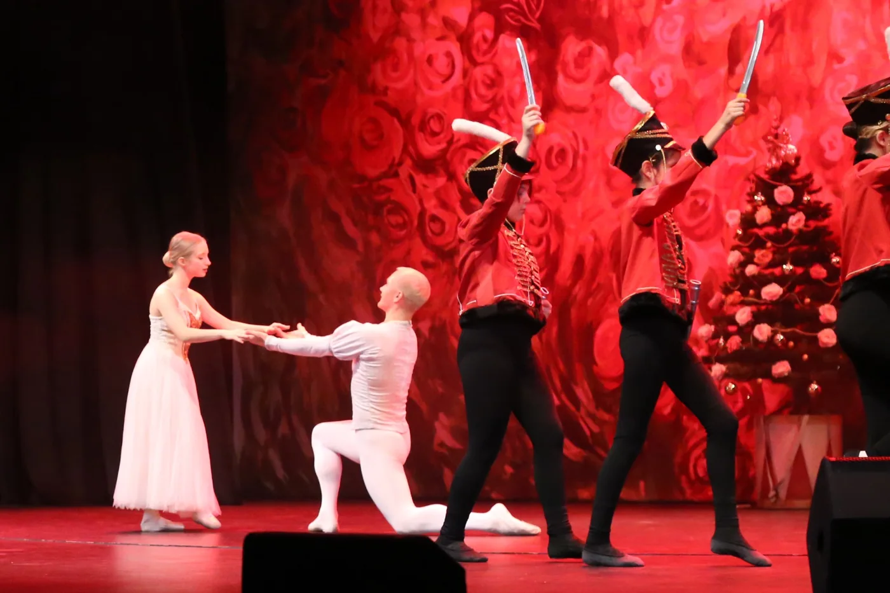
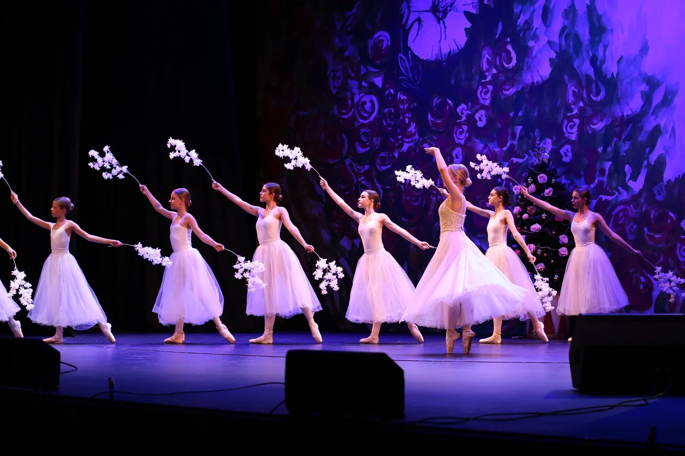
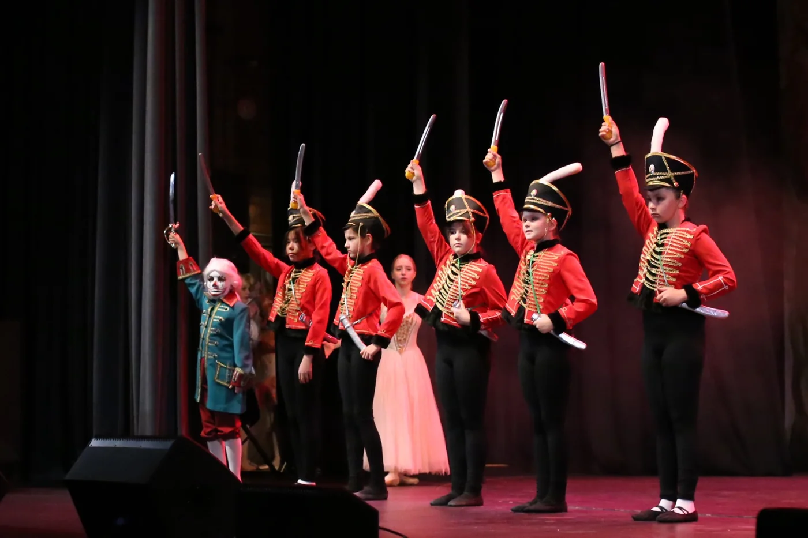
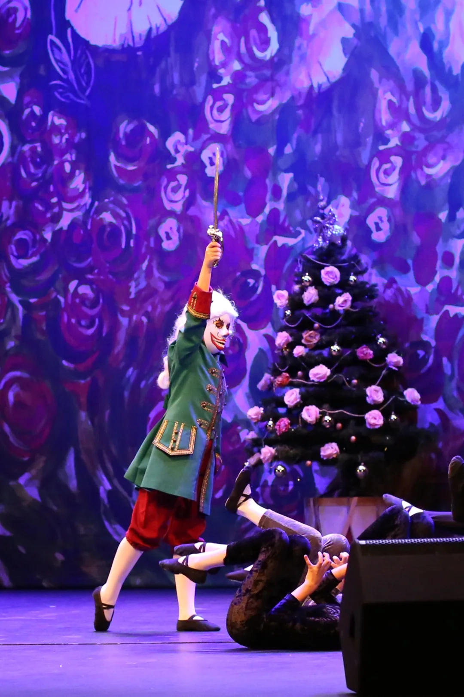
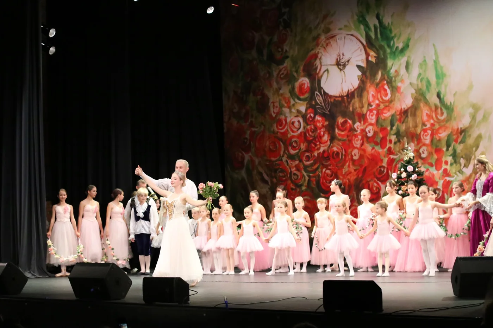
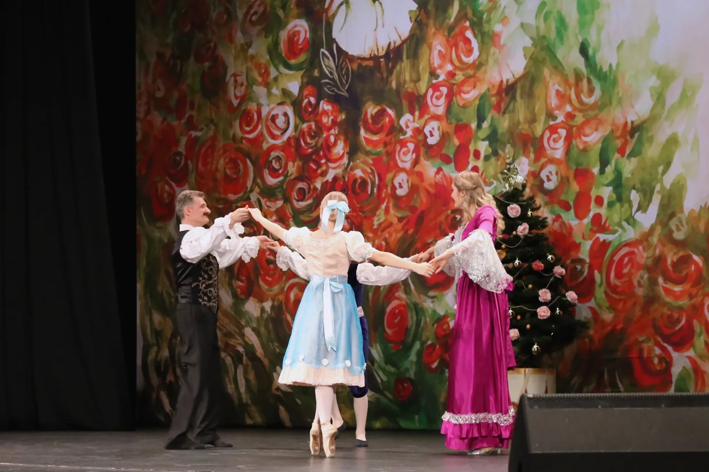
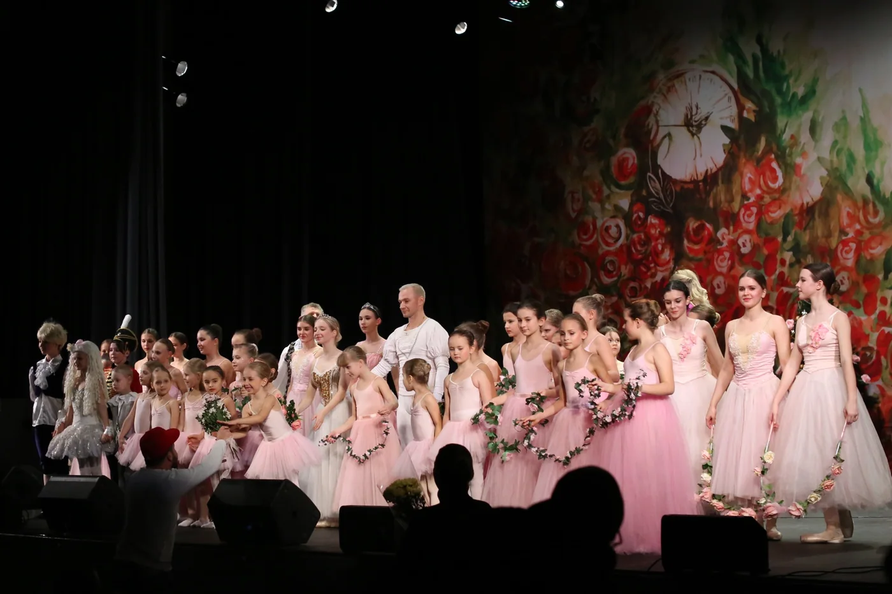

Спектакли театра
«Щелкунчик»
Балетный спектакль Детского театра балета «Эльф».
Сказочная постановка с авторской драматургией, оригинальными костюмами и сценической историей, которая живёт вместе с разными поколениями воспитанников театра.
- Балетный спектакль
- Музыка П. И. Чайковского
- Действующий репертуар
- Для зрителей от 5 лет
- Продолжительность — около 1–1,5 часа
О спектакле
«Щелкунчик» в театре «Эльф»
«Щелкунчик» давно является частью репертуара Детского театра балета «Эльф».
Это не попытка изменить известный балет или пересказать его историю заново. В основе сохраняется знакомая драматургия, но сама постановка существует в авторской версии театра.
Постановка
Авторы постановки
Либретто и режиссура
Наталия Вячеславовна Борисова
Балетмейстер-постановщик
Екатерина Викторовна Анисимова
Музыка
Пётр Ильич Чайковский
Сценический язык
Живая постановка
«Щелкунчик» в «Эльфе» сохраняет основу спектакля, но не является однажды зафиксированной схемой.
В разных поколениях исполнителей хореография может адаптироваться с учётом их технических возможностей.
Благодаря этому постановка остаётся живой: меняются дети, сценические задачи и отдельные хореографические решения, но сохраняются либретто, общий художественный замысел и характер спектакля.



Спектакль, который смотрят с замиранием сердца
Для театра особенно важно сохранить ощущение сказки — то состояние, когда ребёнок в зрительном зале перестаёт просто смотреть на сцену и начинает переживать происходящее вместе с героями.

На сцене
Разные поколения исполнителей
В постановке участвуют воспитанники «Эльфа» примерно от 6 до 18 лет.
Роли распределяются с учётом возраста и уровня подготовки исполнителей.
В спектакле также принимают участие выпускники театра, педагоги и актёры московских театров.
Так одна постановка соединяет нынешних воспитанников с людьми, которые сами когда-то прошли школу «Эльфа».
Путь к сцене
Сцена как продолжение обучения
Для ребёнка участие в «Щелкунчике» не является обязательным.
Выход на сцену становится следующим этапом для тех воспитанников, которые сами хотят участвовать в спектаклях и готовы к сценической работе.
Ребёнку без предыдущей подготовки обычно требуется примерно один-два года занятий, прежде чем он будет готов к полноценному участию в постановке. При наличии подготовки это может произойти раньше.
Фотографии спектакля
«Щелкунчик» на сцене



Пробное занятие
Стать частью театра
Знакомство со сценой начинается не со спектакля — оно начинается с занятий.
Со временем для тех воспитанников, которым это интересно, обучение может привести к репетициям, сценическому образу и участию в постановках театра.
Пробные занятия бесплатно.
Репертуар
Другие спектакли театра
Жар-птица
Снежная королева
Золушка
Балерина Лидочка Иванова — секрет триумфа и тайна гибели
Иммерсивный трагический детектив.